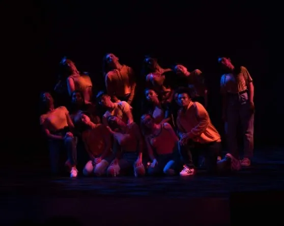

Dancing Out Your Emotions

Competition season is stressful for many, if not everyone. Hours and hours of practice goes into perfecting a dance routine, and that does not include the learning process. When my team and I prepare for competition, we begin months in advance. It is never too early to start a new number for competition.
DO: Practice, Practice, Practice!
My team and I typically had three hour practices during the week and day-long practices on the weekends. Even with the extra hours, all that practice does not feel like enough as you get closer to competition day. You will find yourself trying to fit in more practices as the date gets closer.
DON'T: Skip Conditioning
Conditioning makes or breaks a team's ability to keep their energy throughout a dance. Make it a point to include extensive workouts (abs, arms, legs, etc.) to keep your team strong. Conditioning helps strengthen your team and sharpen their moves. It is always important to keep movements clean, and having full control of your body will help with that.
DO: Make Time to Bond
Bonding is a must with or without competitions. Team chemistry will make your performances appear stronger and more unified. Find time to get dinner with your team or take part in team-building activities to allow your dancers to get comfortable with each other. Comfortability will make your dancers connect in life and in dance.
DON'T: Rush Your Routine
It is easy to give up on routines because you feel as though they are not "competition-worthy." Don't give up! There is always room for improvement, and dances are never set in stone. Keep in mind that change is inevitable and you may find that your vision does not match execution. If that is ever the case, rewind the clock and keep trying, a perfect routine is bound to come out of improvisation.
Competitions are stressful enough, why make it more stressful in the months before? Follow these dos and don'ts and you can expect a smoother competition season!